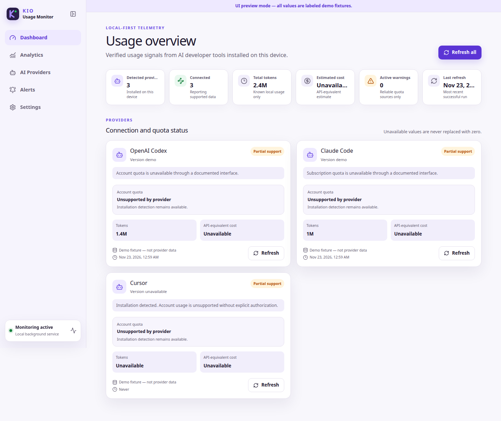
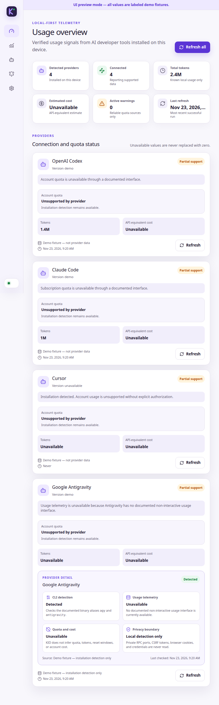
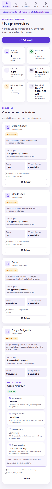

Báo cáo nghiệm thu dựa trên kết quả test và ảnh chụp Playwright thực tế. Ứng dụng không có tài khoản admin hay URL đăng nhập vì toàn bộ dữ liệu hoạt động local-first trên thiết bị.
Tauri 2 + Rust + React + TypeScript + SQLite
Không áp dụng — không có backend cloud hoặc tài khoản quản trị.
Local-only; không đọc cookie trình duyệt, kho credentials hoặc private OAuth/RPC.

| Trước | Sau |
|---|---|
| Ứng dụng Python/Tkinter và tài liệu có cơ chế private OAuth/RPC. | Tauri 2/Rust/React, adapter độc lập và trạng thái unavailable minh bạch. |
| UI desktop cũ, khó kiểm thử responsive. | Dashboard responsive, light/dark, semantic navigation, kiểm thử 375/768/1440px. |
| Lưu trữ rời rạc và quota fallback thiếu độ tin cậy. | SQLite migration 11 bảng, dữ liệu không biết giữ nguyên null, không bịa quota. |
| Đóng gói chủ yếu theo host hiện tại. | CI native bundle cho Linux, Windows và macOS; release signing để cấu hình sau. |

